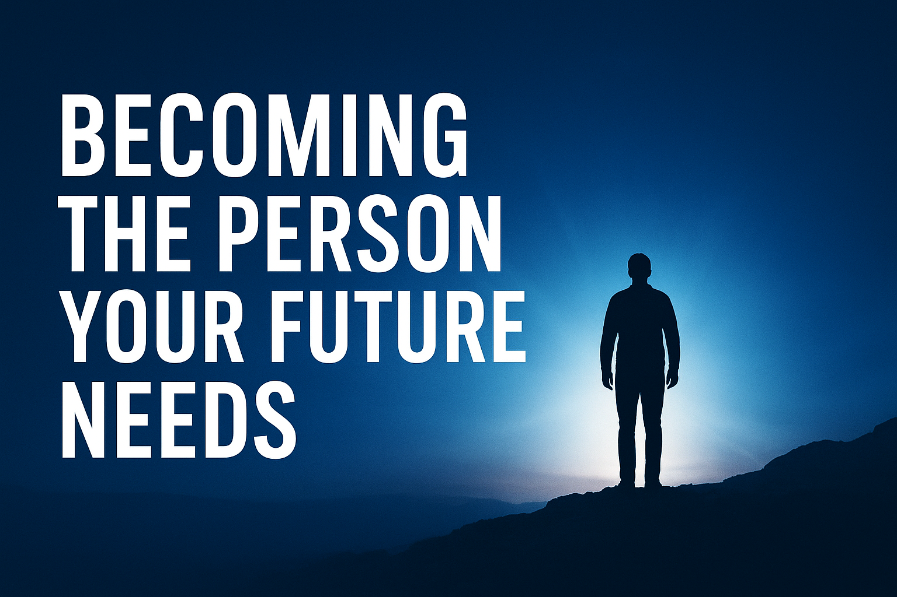

Becoming the Person Your Future Needs

We all dream of success, purpose, and greatness.
But the truth is — your future self isn’t waiting for you somewhere in the distance.
They’re being formed right now, through every decision you make and every habit you build.
If your future self could speak, what would they say?
Maybe:
“Don’t stop now.”
“Keep showing up.”
“You’re building me with every choice you make.”
Because whether you realize it or not, you are already becoming that person — one small, consistent action at a time.
🧱 1. Your Habits Shape Your Future
The foundation of your future is built quietly, in the little things you do every day.
Every time you read instead of scroll…
Create instead of complain…
Choose discipline instead of distraction…
You’re investing in your future self.
Your dreams won’t just appear — they’ll grow from the seeds you’re planting through consistency.
So if you want your future to look different, change the habits you’re repeating now.
⚔️ 2. Growth Will Stretch You
Becoming who you’re meant to be isn’t always comfortable — and that’s okay.
Growth requires discomfort.
Every struggle, delay, or rejection you face is refining you, not defining you.
Don’t run from the process.
Embrace it.
You’re not being punished — you’re being prepared.
The version of you that your future needs can’t be built in comfort.
🌅 3. Vision Creates Direction
When you see your life with a clear vision, your actions start to align.
You stop doing random things and start doing the right things.
Vision gives purpose to your work, energy to your effort, and strength to your discipline.
Don’t just wish for a better future — prepare for it.
If your future self is wise, start learning now.
If your future self is impactful, start creating now.
If your future self is disciplined, start building routines now.
Vision isn’t a picture of the future — it’s a plan for today.
💫 4. You Are Already Becoming
You’ve overcome things your past self couldn’t imagine.
You’re more focused, aware, and capable than before.
So don’t despise your pace — growth is rarely loud.
You might not notice it day to day, but you’re evolving.
Your consistency is working, even when it doesn’t look like it.
Every time you show up — tired, unsure, or unmotivated — your future self thanks you.
✨ Final Thoughts
Becoming the person your future needs isn’t about perfection; it’s about alignment.
Your choices, discipline, and mindset are building something powerful — something eternal.
So, the next time you feel like giving up, remember:
You’re not doing this for now —
You’re doing it for who you’re becoming.
Your future self is waiting… cheering you on… whispering:
“Keep going. I need you to become me.”
🔗 Related Posts